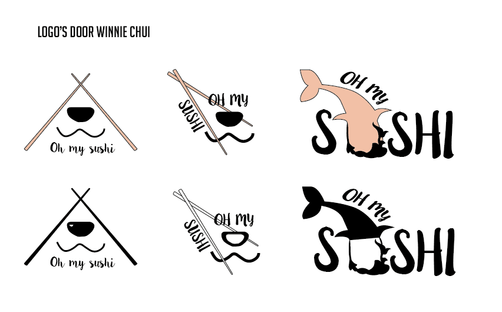
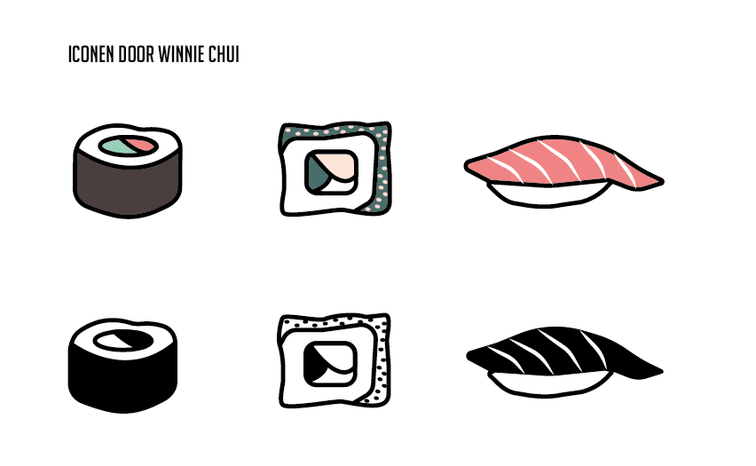

Oh My Sushi
Voor het vak Vormgeving (Propedeuse, 2016) heb ik voor mijn eigen Sushi foodtruck (fictief) een aantal logo's en iconen gemaakt in Adobe Illustrator.
 De door mij ontworpen logo's en iconen heb ik verwerkt in een one-pager. Het ontwerpproces bestond uit het maken van diverse schetsen, ontwikkelen van een moodboard en kleurenpalet. Bekijk hier mijn one-pager voor het vak Vormgeving